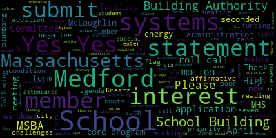
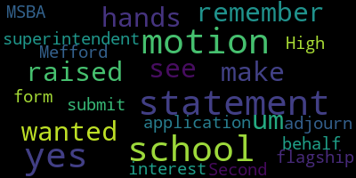

[Unidentified]: Hi, Kathy. Hello. Hi. I was looking for the unmute. Hello. Hi. Hi, everybody, we'll start in one minute.
[Lungo-Koehn]: All right, we have our special meeting of the Medford School Committee, April 25th, 2022, 5 p.m. via Zoom. You could also call in by dialing 1-929-205-6099. Please enter meeting ID 964-4864-8565. The agenda is, first up, we have roll call for attendance of members and the student representatives.
[Ruseau]: Thank you. One second, let me grab my iPad. And I was the secretary. Member Graham.
[Unidentified]: Here.
[Ruseau]: Member Hays.
[Unidentified]: Here.
[Ruseau]: Member Kreatz.
[Kreatz]: Here.
[Ruseau]: Member McLaughlin.
[Kreatz]: Here.
[Ruseau]: Member Mastone. I know she's joining us, she may just be a minute late. Member Ruseau here, Mayor Lungo-Koehn.
[Lungo-Koehn]: Present. Six present, one absent for now. Please rise to salute the flag. I pledge allegiance to the flag of the United States of America, to the Republic for which it stands, one nation under God, indivisible, with liberty and justice for all. We have number three, MSBA and continuation of the previous discussions on March 21st, 2022 and April 11th, 2022. Concerning the district's intention to submit a statement of interest to the Massachusetts School Building Authority, MSBA core program on behalf of Medford High School, the school committee will be asked to approve the following motion, thereby authorizing the administration to formally submit the MHS statement of interest. MSBA required form of vote to submit statement of interest. Please bear with me, it's a little lengthy. Be resolved having convened in an open meeting on April 25th, 2022 prior to the SOI submission. closing date the school committee of the city of Medford in accordance with its charter bylaws ordinances has voted to authorize superintendent Marice Edouard-Vincent to submit to the Massachusetts mid school building authority and statement of interest form dated April 2022 for Medford High School located at 489 with street which describes and explains the following deficiencies and the priority categories for which an application application may be submitted to the Massachusetts School Building Authority in the future. The Medford School Committee hereby further specifically acknowledges that by submitting this statement of interest form, the Massachusetts School Building Authority in no way guarantees the acceptance or the approval of an application, the awarding of a grant or any other funding commitment from the Massachusetts School Building Authority or commits the city of Medford to filing an application for funding with the Massachusetts School Building Authority. High School MSBA core program statement of interest summary statutory priority number five replacement renovation or modernization of school facility systems, such as roofs windows boilers heating and ventilation systems, increase energy conservation and decrease energy related costs in a school facility. Having been originally constructed in 1970. substantial portions of the buildings infrastructure dating from that time Medford High School operating systems, including but not limited to its H fast systems roofs windows plumbing and electrical systems have long lived their useful life expectancy indoor and poor poor working conditions. In addition to major energy efficiency challenges posed by these antiquated systems, which were identified recently in a facilities condition assessment, the MHS facility features suboptimal ADA accessibility, fire safety, security, and technical logical aspects that would potentially be addressed through an MSBA partnership. at the public school seeks to submit the statement of interest to explore possible remedies to environmental challenges plaguing MHS attributable to highly integrated systems like single pane windows and plumbing and heating systems that have too frequently proved inadequate to withstand the fluctuations in weather patterns that are inevitable in the greater Medford area. In addition to escalating wasteful utility expenses, extreme temperatures, yes.
[Ruseau]: make a motion to waive the reading of the rest of that.
[Lungo-Koehn]: Thank you. Motion to waive the reading by member Rousseau, seconded by.
[Ruseau]: Second.
[Lungo-Koehn]: Member McLaughlin, roll call.
[Ruseau]: Member Graham.
[Lungo-Koehn]: Yes.
[Ruseau]: Member Hays.
[Unidentified]: Yes.
[Ruseau]: Member Kreatz.
[Unidentified]: Yes.
[Ruseau]: Member McLaughlin.
[Lungo-Koehn]: Yes.
[Ruseau]: Member Mustone.
[Lungo-Koehn]: Yes.
[Ruseau]: Member Ruseau, yes. Mayor Lungo-Koehn.
[Lungo-Koehn]: Yes, seven in the affirmative, zero in the negative. The remainder of the reading is waived. It has been listed on the agenda for several days now. We all have had the opportunity to read it and we can definitely have it posted on our website. And now I'm gonna turn it over to the administration to say a few words.
[Edouard-Vincent]: Thank you, Mayor. I'm going to pass the baton on to Mr. Murphy, who has been lead on this portion of the project. Mr. Murphy.
[Murphy]: Thank you, Dr. Edward-Vinson. Thank you, Mayor, members of the school committee. Just because I know there are some members of the public listening, and if you haven't been following this over the course of the last several months, I just want to make sure that everyone has the appropriate context. So on January 24th, the administration came to the school committee to mark the opening of the MSBA's statement of interest application window. That window opened on January 28th and closes on April 29th. Since that time, the administration has updated the school committee both on March 21st and most recently as the mayor referenced on April 11th, communicating our desire to submit a statement of interest to the MSBA core program. That's the core program in contrast to the accelerated repair program And as we've discussed on several occasions, the distinction between those two MSBA programs, accelerated repair focuses on three fundamental components of the building's infrastructure, namely boilers, windows, and roofs. The core program, which is where we've decided from a strategic perspective, it would be most advantageous for us to submit our statement of interest on behalf of Medford High School, our flagship school, addresses all elements of a building's infrastructure, either through extensive renovation or new construction. As you've heard me saying several times, and as I said to the city council and the superintendent, I said to the city council last week, this is not an indication that a new Medford High School is imminent. It is the first necessary and preliminary step so that we can hopefully enter into the MSBA's pipeline so that we can be considered for a core program at some point in the relative near future. So there are several steps that we will have to go through along the way. and a lot of due diligence that we will have to undertake, both between the school district and the city of Medford, working in partnership, hopefully with the MSBA. So this doesn't, as the motion reads and the language prescribed by the MSBA reads, it is not an indication of a commitment either on the part of the city or on the MSBA, but it's an initial conversation that's necessary in order for us to potentially be considered down the road. Just with regard to this particular vote that you're about to take, we had submitted essentially all of the same information to you on April 11th. But as I said then, the draft of the facilities condition assessment was still being developed, as was our statement of interest. And so in between the time where you voted on April 11th and the city council voted on April 19th, the statement of interest developed further. And we were able to, at that point, use the template language that MSBA recommends to districts. And it was an important, well, I frankly think it would have been sufficient with respect to the vote you took on April 11th, just because of the magnitude of this initiative or potential magnitude of this initiative and the sensitivity of it, just as sort of a belt and suspenders approach, we wanted you to convene very briefly this evening so that you could take a vote on a motion that is identical to the one that the Medford City Council passed on April 19. So I do on behalf of the administration want to extend our gratitude to the members of the committee who I know are in various places right now, and I'm grateful to you for convening on short notice to address this. And I am hopeful that you won't have to do it again, at least at this stage in the project. So if you have any questions, I'm happy to answer them. But as I said, this is something we've We've discussed them in public on several occasions. You've got the information now twice, and now you just have it in the recommended language.
[Kreatz]: I didn't see any hands raised but I remember yes, um, I wanted to make a motion for the superintendent to submit to the MSBA the statement statement of interest application form on behalf of our flagship school Mefford High School.
[Lungo-Koehn]: Thank you.
[Ruseau]: Was this the mayor?
[Lungo-Koehn]: I think we might've lost you, ma'am.
[Ruseau]: I'm sorry.
[Lungo-Koehn]: I'm back. Member Kreatz made a motion, seconded by Member McLaughlin. If we could all take a roll call, please.
[Ruseau]: Member Graham.
[Lungo-Koehn]: Yes.
[Ruseau]: Member Hays. Yes. Member Kreatz.
[Lungo-Koehn]: Yes.
[Ruseau]: Member McLaughlin.
[Lungo-Koehn]: Yes.
[Ruseau]: Member Mustone. That's what we do with this. Yeah, yes. Oh, there you are. Sorry, we have technical difficulties. That's okay. Remember so yes fair longer.
[Lungo-Koehn]: Yes, seven of the affirmative zero the negative the paper passes unanimously. Thank you again to the administration and Mr. Murphy for working with us to make it as best as it can be. And so we can submit the request to be part of the core program. Is there a motion to adjourn?
[Kreatz]: Motion to adjourn. Second.
[Lungo-Koehn]: By member McLaughlin, seconded by member Kreatz. Roll call, please.
[Ruseau]: Member Graham.
[Lungo-Koehn]: Yes.
[Ruseau]: Member Hays. Yes. Member Kreatz. Yes. Member McLaughlin.
[Kreatz]: Yes.
[Lungo-Koehn]: Yes.
|
total time: 4.79 minutes total words: 717  |
total time: 0.94 minutes total words: 123 |
total time: 0.28 minutes total words: 48  |
total time: 0.17 minutes total words: 25 |
{kind=link}
{kind=link}
{kind=link}
{kind=link}